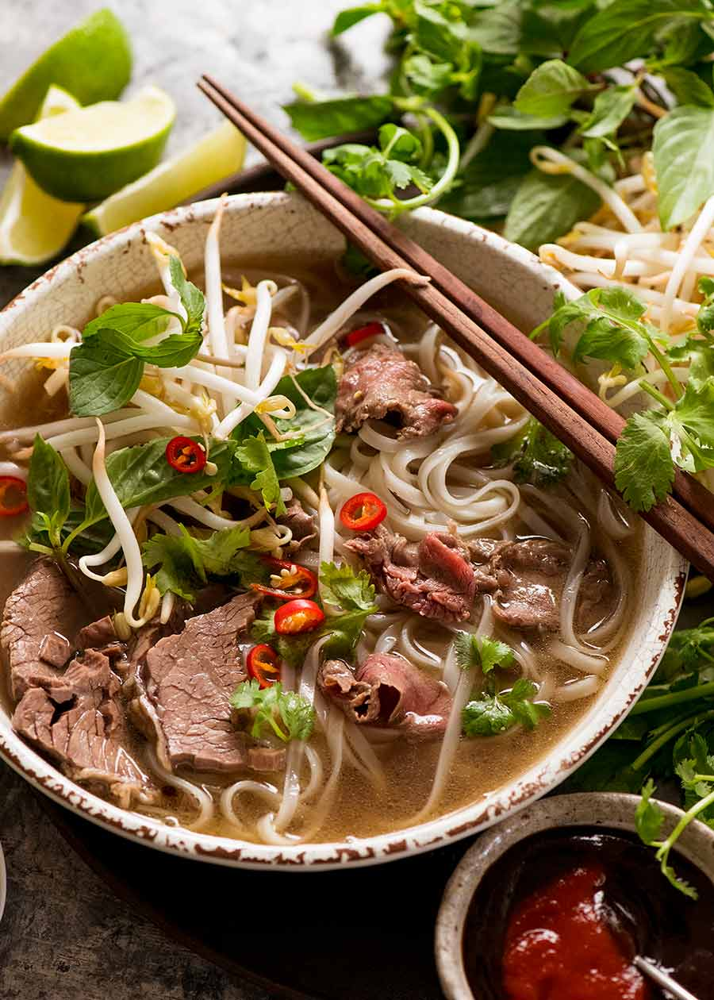

Beef Pho
Return to Home

Description
This beef pho is a comforting Vietnamese noodle soup made with a deeply flavorful broth infused with aromatic spices, tender slices of beef, and silky rice noodles. Finished with fresh herbs, bean sprouts, lime, and your favorite toppings, this classic bowl delivers rich, savory flavors that are perfect for a cozy lunch or dinner.
Ingredients
- 2 pounds beef soup bones (marrow and knuckle bones)
- 1 pound beef brisket
- 1 pound sirloin or eye of round, thinly sliced
- 1 large onion, halved
- 1 (4-inch) piece fresh ginger, halved lengthwise
- 2 cinnamon sticks
- 4 star anise pods
- 4 whole cloves
- 1 tablespoon coriander seeds
- 1 tablespoon fennel seeds (optional)
- 2 tablespoons fish sauce
- 1 tablespoon rock sugar or granulated sugar
- 1 tablespoon kosher salt, or to taste
- 1 (16-ounce) package dried rice noodles
- 1 cup bean sprouts
- 1/2 cup fresh Thai basil leaves
- 1/4 cup chopped cilantro
- 2 green onions, thinly sliced
- 1 lime, cut into wedges
- 1 jalapeño, thinly sliced (optional)
- Hoisin sauce, for serving
- Sriracha, for serving
Steps
- Place the beef bones in a large stockpot and cover with cold water. Bring to a boil for 10 minutes, then drain and rinse the bones thoroughly. Clean the pot before returning the bones.
- Char the onion and ginger over an open flame, under the broiler, or in a dry skillet until lightly blackened. Add them to the pot with the bones.
- Toast the cinnamon sticks, star anise, cloves, coriander seeds, and fennel seeds in a dry skillet for 2 to 3 minutes until fragrant. Add the spices to the stockpot.
- Add the brisket and about 5 quarts of water. Bring to a gentle boil, then reduce to a low simmer. Skim off any foam that rises to the surface.
- Simmer for 3 to 4 hours, removing the brisket after about 2 hours when tender. Let it cool before slicing thinly. Continue simmering the broth.
- Strain the broth through a fine-mesh sieve and discard the solids. Stir in the fish sauce, sugar, and salt, adjusting the seasoning to taste.
- Cook the rice noodles according to the package directions. Drain well and divide among serving bowls.
- Top each bowl with sliced brisket and thin slices of raw beef. Ladle the hot broth over the beef to gently cook it.
- Garnish with bean sprouts, Thai basil, cilantro, green onions, lime wedges, and jalapeño slices. Serve with hoisin sauce and Sriracha on the side.